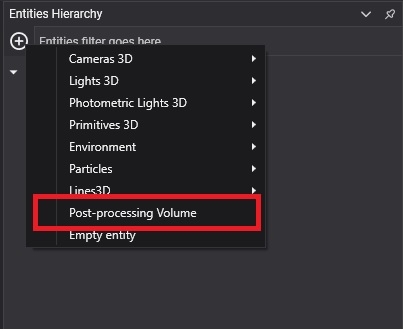
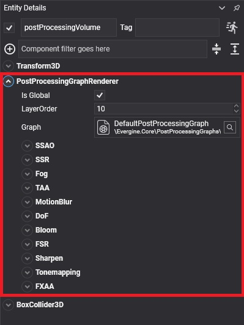

Using the Post-Processing Graph

A post-processing graph affects a scene through a post-processing volume: an entity with a PostProcessingGraphRenderer component that references the graph. This page shows how to add one in Evergine Studio and from code, and how volumes decide which cameras they affect.
Load a post-processing graph from code
Load the graph asset and add a volume that uses it:
using Evergine.Components.Graphics3D;
using Evergine.Framework;
using Evergine.Framework.Graphics;
using Evergine.Framework.Services;
public class MyScene : Scene
{
protected override void CreateScene()
{
var assetsService = Application.Current.Container.Resolve<AssetsService>();
var graph = assetsService.Load<PostProcessingGraph>(EvergineContent.PostprocessingGraph.MyPostProcessingGraph);
// A global volume affects every camera, so it needs no position or collider.
Entity postprocessingVolume = new Entity("postProcessingVolume")
.AddComponent(new Transform3D())
.AddComponent(new PostProcessingGraphRenderer() { ppGraph = graph, IsGlobal = true });
this.Managers.EntityManager.Add(postprocessingVolume);
}
}
Without a ppGraph, the component uses the default post-processing graph of Evergine.Core.
Add a post-processing volume in Evergine Studio
Click the  button in the Entities Hierarchy panel and select Post-processing Volume. The new volume uses the default post-processing graph.
button in the Entities Hierarchy panel and select Post-processing Volume. The new volume uses the default post-processing graph.

A Postprocessing Volume is an entity in your scene composed of 3 components:
Transform3DPostProcessingGraphRendererBoxCollider
PostProcessingGraphRenderer
| Property | Default | Description |
|---|---|---|
| ppGraph | Default post-processing graph | The graph asset the volume applies. |
| IsGlobal | true | When true, the graph applies to every camera. When false, it applies only to the cameras that enter the volume defined by a BoxCollider, so you can change the look of a room or a cave. |
| LayerOrder | 10 | When the graph runs, compared with the Order of the render layers. The graph runs after every layer with a lower order, so the default of 10 runs it after opaque (0), alpha (2) and additive (3) objects. Give a UI layer an order above it to keep the UI out of post-processing. |
Below these properties, the component shows the parameters of the graph: either all of its node inputs or, when the graph has one, the panels of its decorator.
